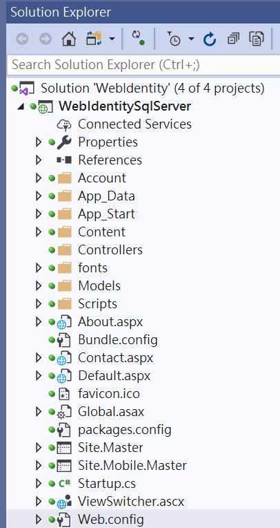
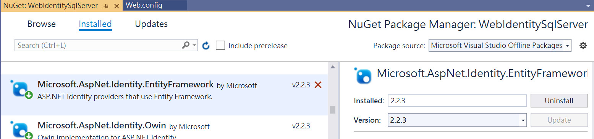
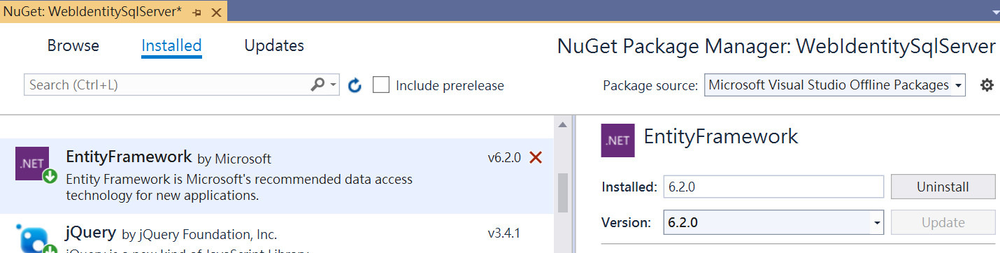
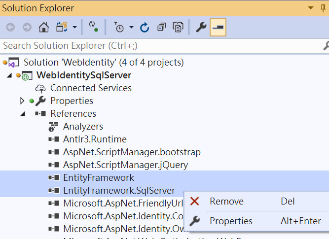
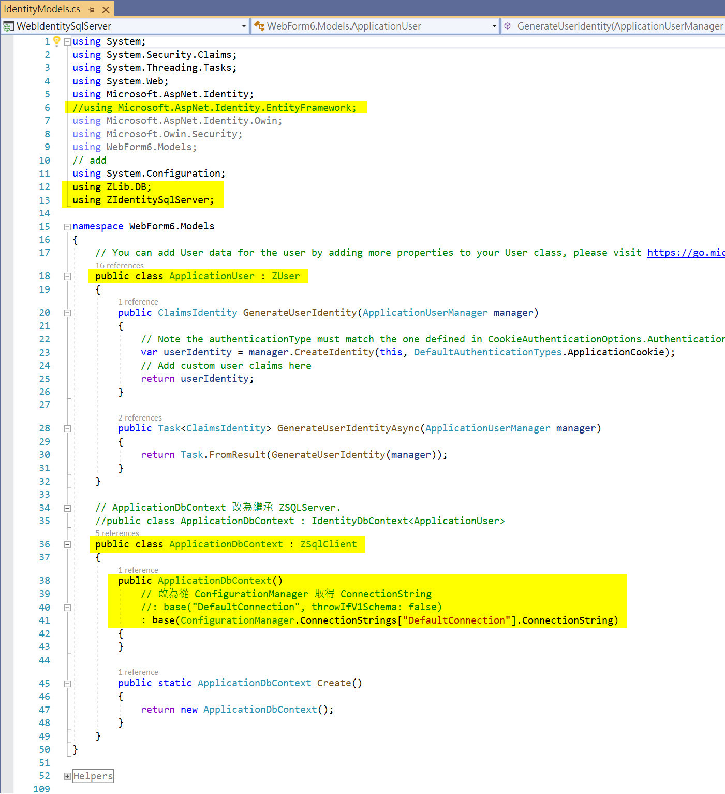
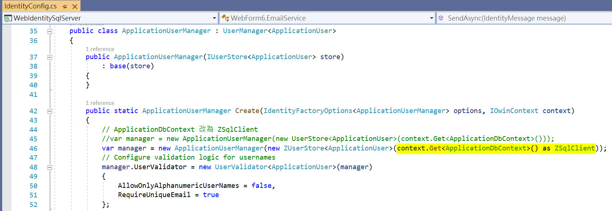
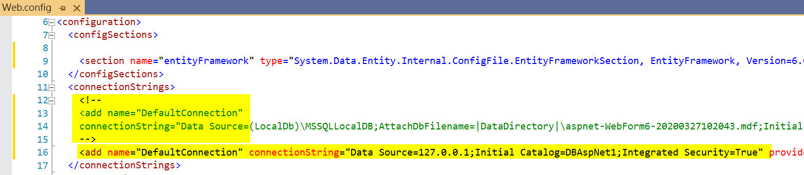

Date: 2020-04-02
Subject: 實作 Microsoft.AspNet.Identity
本文示範在 ASP.NET Web Forms 網站中, 替換掉 Microsoft.AspNet.Identity.EntityFramework 的方法.
修改的方法, 跟先前修改 Visual Studio 2015 自動產生的方法相同:
1. SQLServer
2. MySQL
但是這次的目標是要修改 Visual Studio 2019 自動產生的 WebForms 程式.
這一系列的程式修改結果, 可從以下網址下載:
- WebAuthSQL: Visual Studio 2015, WebForms, SQLServer
- WebAuthMySQL: Visual Studio 2015, WebForms, MySql
- WebAuthSQL: Visual Studio 2019, WebForms, SQLServer (本文)
- WebAuthMySQL: todo: Visual Studio 2019, WebForms, MySql
步驟:
- 建立網站 WebIdentitySqlServer
- 解除安裝 Microsoft.AspNet.Identity.EntityFramework 元件
- 移除參考 EntityFramework 及 EntityFramework.SQLServer
- 加入以 SQL 語法製作的 ASP.NET Identity 自訂元件
- 將 EntityFramework 改為使用 LibSQL.DIdentity
- 將 ApplicationUser 改為繼承 LibSQL.DIdentity.User., ApplicationDbContext 改為繼承 ZLib.DLib.ZSqlClient
- 將 ApplicationUserManager 類別需要的資料庫改為由 ZLib.DLib.ZSqlClient 提供
- 將 ConnnectionString 改到新的資料庫位置
- 建立新ASP.NET Identity身分認證資料庫, 移除舊資料庫
- 編譯執行測試
- 建立網站專案 WebIdentitySqlServer
預定修改的網站, 可自行以 Visual Studio 2019 自動產生(選擇 Web Forms, Authentication=Individual User Accounts). 或是下載 WebForm6後, 將專案名稱改為WebIdentitySqlServer.

- 解除安裝 Microsoft.AspNet.Identity.EntityFramework 元件 及 EntityFrameWork


- 移除參考 EntityFramework 及 EntityFramework.SQLServer
 - 加入自訂的 ASP.NET Identity 實作程式
本文提供 Visual Studio 2019 的程式庫版本專案補齊:
1. ZLib: 公用程式庫.
2. ZSqlClient: 存取 SQL Server 資料庫公用程式庫. (也可用於 MSSQLLocalDB 或 SQL Express 資料庫)
3. ZIdentitySqlServer: 替代 Microsoft.AspNet.Identity.EntityFramework, 存取ASP.NET Identity身分認證資料庫的公用程式庫.
????: Visual Studio 2019, WebForms, SQLServer (本文) 請將這三個專案, 加入 Solution 中並參考引用.
ASP.NET Identity身分認證資料庫
- 將 Microsoft.AspNet.Identity.EntityFramework 改為使用 ZIdentitySqlServer
將專案中, 所有的 using Microsoft.AspNet.Identity.EntityFramework; 的 .cs 程式, 都改成 using ZIdentitySqlServer;
需要修改的程式清單如下:
App_Start\IdentityConfig.cs
App_Start\Startup.Auth.cs
Models\IdentityModel.cs
Account\Manage.aspx.cs
- 將 IdentityModel.cs 之 ApplicationUser 改為繼承 ZUser, ApplicationDbContext 改為繼承 ZSqlClient

- 將 IdntityConfig.cs 取得的 ApplicationDBContext 改為 ZSqlClient

- 將 Web.Config 之 ConnnectionString 改到新的資料庫位置

- 建立新資料庫, 移除舊資料庫
參考 CreateDBAspNet1-SqlServer.sql 建立 SQL Server 新資料庫 DBAspNet1
移除在 App_Data 目錄下的舊資料庫 MSSQLLocalDB:
App_Data\*.MDF
App_Data\*.LDF
- 編譯執行測試